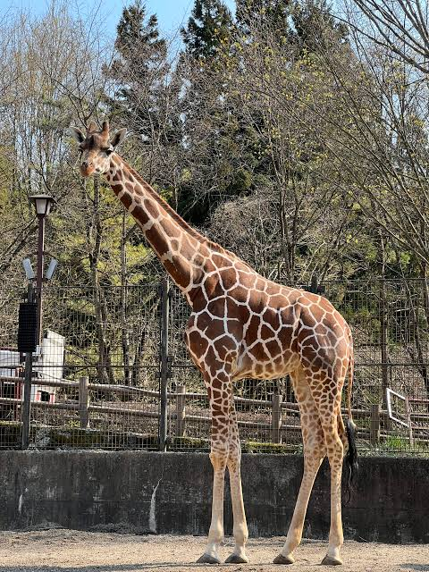
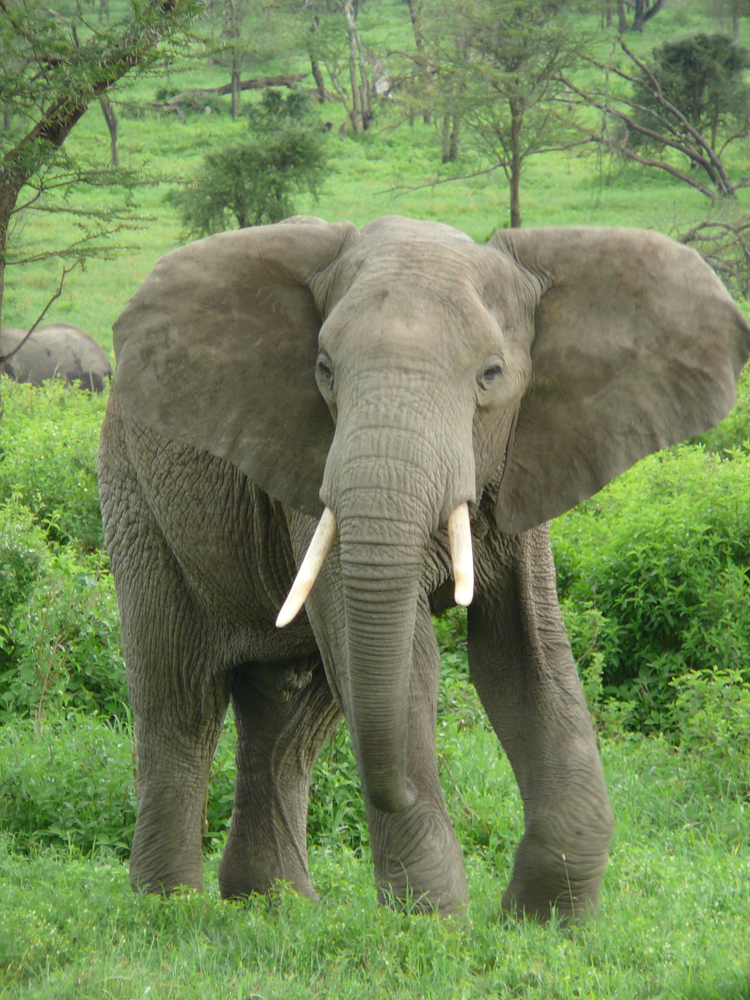
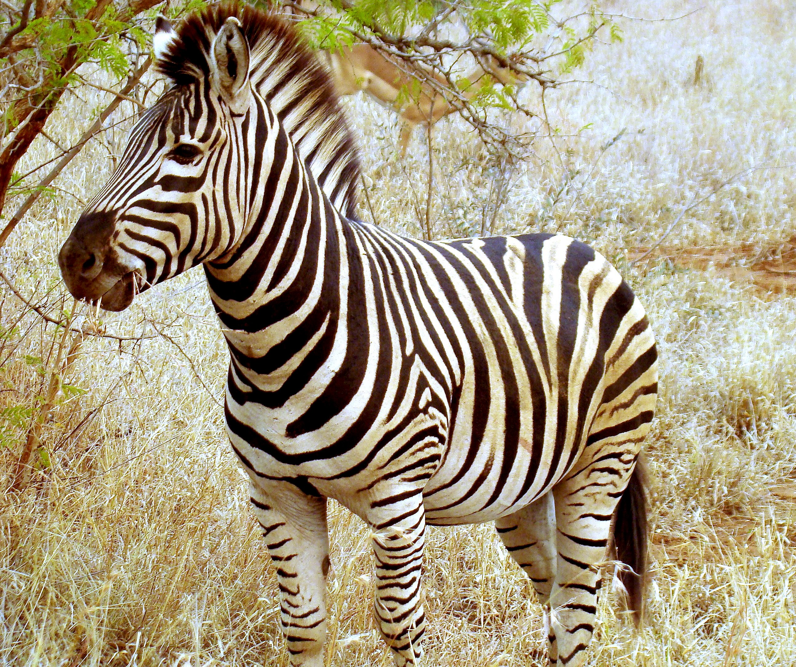

ライオン
ライオン（学名 Panthera leo）は、アフリカのサバンナや疎林に暮らすネコ科の大型肉食獣です。オスの体重はおよそ 150〜250kg、メスは120〜180kg ほどで、現生のネコ科ではトラに次ぐ大きさを誇ります。かつてはアフリカ全土から 西アジア、インドにかけて広く分布していましたが、現在の生息域は大きく縮小し、アフリカのサハラ以南と、インドの ギル国立公園に残るわずかな個体群に限られています。
ライオンを特徴づけるのは、ネコ科でほぼ唯一とされる群れでの暮らしです。この群れは「プライド」と呼ばれ、血縁関係に あるメスたちとその子ども、そして数頭のオスで構成されます。メスは生まれた群れに留まり続ける一方、オスは成長すると 群れを離れ、やがて別のプライドを乗っ取ろうと試みます。狩りの成功も子育ても群れの連携に支えられており、単独では 得られない安定が、この社会性の最大の利点だと考えられています。
狩りを担うのは主にメスで、複数頭が役割を分担しながら獲物を追い込みます。昼間の暑い時間帯はほとんど休息に充て、 活動が活発になるのは夕暮れから夜明けにかけての涼しい時間です。おもな獲物はヌー、シマウマ、インパラといった 中型から大型の草食獣で、季節や地域によってはスイギュウのような手強い相手にも挑みます。狩りの成功率は決して高く なく、失敗を重ねながら群れ全体で食いつないでいきます。
成熟したオスの首まわりを飾るたてがみは、栄養状態やホルモンの状態を映す指標とされ、濃く豊かなたてがみを持つ個体 ほど他のオスから一目置かれる傾向が報告されています。また、ライオンの吠え声は条件がよければ数km先まで届き、縄張り の主張や仲間との位置確認に使われます。生息地の減少や人間との衝突により個体数は長期的に減少しており、国際自然保護 連合（IUCN）のレッドリストでは危急種（VU）に分類されています。

キリン
キリンは陸上で最も背の高い動物で、成熟したオスは頭の先までの高さが5mを超えることもあります。体重はオスで 1,100〜1,900kg ほど。長らく一種とされてきましたが、近年の遺伝的研究により複数種に分けるべきだという見解が 示され、分類の見直しが進んでいます。アフリカのサバンナや開けた林に分布し、他の草食獣が届かない高さの葉を利用 することで、他種との競合を避けた独自の生態的地位を確立しています。
あれほど長い首を持ちながら、キリンの首の骨（頸椎）の数は7個で、これは人間とまったく同じです。違うのは数ではなく 一つひとつの長さで、それぞれの頸椎が極端に伸びることで、あの高さが実現されています。首は採食のためだけでなく、 オス同士の力比べにも使われます。首を振り回して相手に頭部を打ちつける行動は「ネッキング」と呼ばれ、ときに大きな 衝撃を生む激しい争いになります。
食事を支えているのは、40cm 以上に伸びる長い舌です。色は黒っぽい紫を帯びており、強い日射による日焼けを防ぐため だと考えられています。好んで食べるのはアカシアの葉ですが、この木は鋭い棘で武装しています。キリンは厚く丈夫な唇と 器用な舌を使い、棘を巧みに避けながら葉だけを選び取ります。一日の大半を採食に費やし、乾季には水をほとんど飲まず、 葉に含まれる水分でしのぐこともあります。
高い頭まで血液を送り届けるため、キリンの心臓は非常に強い圧力を生み出します。その一方で、水を飲むために頭を下げた 瞬間に血圧が急上昇しないよう、首の血管には逆流を防ぐ弁が備わり、脳の手前には血流を緩める血管網があります。睡眠 時間は一日数時間ときわめて短く、しかもその多くを立ったまま過ごします。捕食者に囲まれた環境で生き延びるために 研ぎ澄まされた、無駄のない体のつくりだといえます。

アフリカゾウ
アフリカゾウは現生する陸上動物のなかで最大の種です。オスの体重は6トンに達することもあり、肩までの高さは3mを 超えます。現在ではサバンナに暮らすサバンナゾウと、中央アフリカの熱帯林に暮らすマルミミゾウという二つの種に 分けられています。アジアゾウとは、大きく広がった耳や、オスメスともに牙を持つ点で見分けられます。広げた耳は 血管を外気にさらす放熱器としても働き、体温の調節に一役買っています。
ゾウを象徴する長い鼻には骨がなく、無数の筋肉の束だけで構成されています。そのおかげで自在に曲げ伸ばしができ、 数百kgの丸太を持ち上げる力と、地面の小さな木の実を一粒つまみ取る繊細さを同時に発揮します。鼻は水を吸い上げて 口に運ぶ道具であり、砂を浴びるためのシャワーであり、匂いを探る高性能なセンサーでもあります。仲間に触れて挨拶を 交わす、コミュニケーションの手段としても欠かせません。
群れを率いるのは、最も年長の経験豊かなメスです。この母系社会では、水場の位置や乾季の移動路といった知識が世代を 越えて受け継がれていきます。オスは成長すると群れを離れ、単独かオスだけの小さな集団で過ごします。ゾウは仲間の 個体を長く記憶し、死んだ仲間の骨に関心を示すなど、複雑な社会性を思わせる行動が数多く観察されてきました。
ゾウ同士のやりとりには、人間の耳では聞き取れない低周波の音（インフラサウンド）が使われます。この音は地形に 遮られにくく、数km離れた群れにまで届くため、広いサバンナで互いの居場所を知る手段になっています。一日に100kg 以上の植物を食べ、移動しながら糞とともに種子を運ぶその営みは、森やサバンナの姿そのものを形づくっており、 「生態系の設計者」とも呼ばれます。象牙の密猟と生息地の分断がいまなお深刻な脅威であり続けています。

シマウマ
シマウマはウマ科に属する草食獣で、現在サバンナシマウマ、グレビーシマウマ、ヤマシマウマの3種が知られています。 最も広く分布しているのがサバンナシマウマで、東アフリカから南アフリカにかけての草原で大きな群れをつくります。 一方グレビーシマウマは縞が細かく密で耳が大きく、乾燥した地域に限られた分布を示し、個体数の少ない絶滅危惧種と なっています。
白と黒の縞模様は、一頭ごとに異なります。縞の幅や間隔、途切れ方の組み合わせは人間の指紋のように個体固有で、研究者 はこの模様を手がかりに野生の個体を識別します。子は生まれてすぐに母親の縞を覚え、群れのなかで見失わないようにする と考えられています。種によって模様の傾向にも違いがあり、ヤマシマウマは腹部に縞が及ばず、臀部の縞が格子状になる という特徴を持ちます。
では、なぜ縞模様なのか。この問いには長く議論が続いており、決着はついていません。有力視されているのは、アブや ツェツェバエといった吸血性の昆虫が縞のある面にうまく着地できないという説で、これを支持する実験結果が複数報告 されています。ほかにも、白黒の面で温度差をつくり体表に空気の流れを生むという体温調節説、群れで動いたときに 輪郭を曖昧にして捕食者を惑わすという説などが提唱されてきました。
サバンナシマウマは、ヌーやガゼルとともに草と水を追って長距離を移動します。タンザニアからケニアにかけての 大移動では、数十万頭規模の群れが草原を埋め尽くします。異なる種が混じって動くことには利点があり、視覚に優れた シマウマと嗅覚に優れたヌーが互いの警戒網を補い合う関係が指摘されています。ライオンやハイエナに追われたときは、 後ろ脚の強い蹴りで反撃することもあり、決して無抵抗な獲物ではありません。